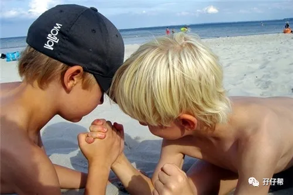
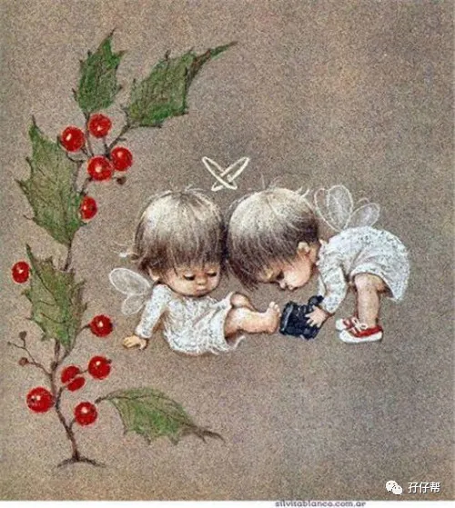
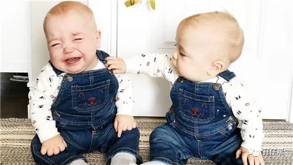
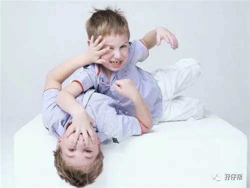
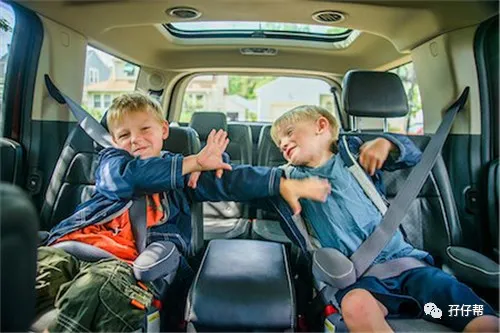
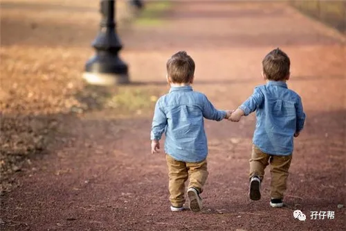
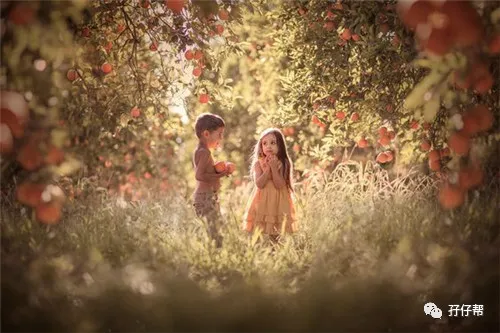
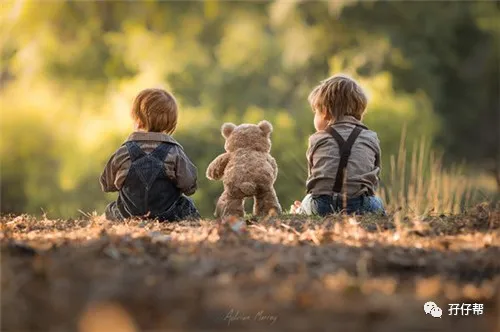

文|圆圈妈，一个文思如尿崩的双胎妈妈
图|来自网络，如有侵权，请联系删除
· 正 · 文 · 来 · 啦 ·
1分钟，2分钟，3分钟….
10分钟过去了，还没轮到我喝奶！
哎，这是第几次了？
真冇眼睇！
我的妈妈在给另一个
跟我长得一模一样的他喂奶！
据说是堵奶了，
他吃不到奶，折腾了很久…
无奈，我只有等！
我是双胞胎之一，
另一个他，
是我的同卵双胞胎哥哥，
听妈妈说，他只比我大一分钟。
小伙伴们都很羡慕我，
从小就有伴儿一起长大，
可是大家都不知道我心里的苦，
比如喝奶这么一件小事，
居然要排队！
我好羡慕其他小baby，
可以被妈妈抱在怀里，
可以赖在乳头上，
想喝多少就有多少，
想吃多久就吃多久，
而我却要在煎熬的等待中，
担心轮到我时，
奶水没了。
趁着六一儿童节，
我要吐槽下，
我们双胞胎儿童的那些囧事！
1
【01】
互相争抢
别人只看到我们互相抢玩具，
其实我们从小胚芽就开始各种抢
为了能在狭小的子宫内夺得一席之地，
我们抢营养，争地盘…
因场地有限，我们不得不上下铺。
我喜欢上铺，这样可以离妈妈近一点，
听到她的心跳，让人很有安全感，
可是另一个他也想睡上铺，
老是踢我踹我，逼我换位置，
我抢不过他，不得不互换位置。
出生的时候，我也很吃亏，
医生叔叔划开肚子的那一刹那，
我被另一个他挡住了…
于是，他先被抱出去了，
我就莫名其妙成了弟弟！
可能是护士小姐姐眼神不好，
我的体重居然也比他少了2两！
明明最勤快锻炼腹肌的那个人是我，
是我！
哎，人算不如天算啊！
谁让我们同时看上了同一个娘！
2
【02】
被迫分享
出生后的我经常哭，没啥特别原因，
因为我很不爽！
爸爸妈妈总是在忙，
都不知道他们在忙什么。
我饿了，渴了，尿了…
总是要等很久，很久...
才有人给我换尿不湿，给我喂奶喝，
有时候是妈妈抱着我喝母乳，
有时候是冷冰冰的奶瓶。
我不喜欢喝牛奶！不喜欢含着奶嘴，
我喜欢妈妈抱着我，跟我说话，给我喂奶！
可是，这由不得我，
很多时候，
我看到的是妈妈忙碌而疲惫的背影。
我抗议，委屈，烦躁…
我能想到的就是哭！
如果哭能引起妈妈的注意，
让她多抱我一会儿，
那我为何不使劲哭呢？
天晓得，
被迫分享妈妈是件多么残忍的事情
3
【03】
彼此干扰
睡觉的时候，我也没好日子过，
好不容易睡着了，却给那个哥吵醒了！
他在妈妈肚子里就经常扰人清梦，
深更半夜还在练太极拳，搅得我睡不好，
这会儿出关了还不歇停。
好希望妈妈把他教训一番，
可是，妈妈每次在他哭闹时，
都那么温柔地把他抱起，
轻声地耳语，抱他去窗外看星星月亮…
我好伤心，
妈妈好像把我给忘了！
我也被吵醒了，我才是受害者，
为什么妈妈只哄他不哄我！
1
【04】
一起打架
1岁的我们，
刚学会走路，活动空间加大，
我们之前的小打小闹升级了，
我的哥会用指甲抓我的脸，
拿玩具敲我的头
...…
当然，我也不是吃素的。
他的屁股上，手臂上，大腿上
都有我的牙印子…
嘿嘿！
他很狡猾，明明是他先找我麻烦，
结果，他自己却恶人先告状了！
每次打不过我就哭…
而我也总是被妈妈鉴定为肇事者。
可是很神奇的是，
不管我们哥俩怎么撕逼，一阵哭闹过后，
我们依然能在一起玩，
虽然持续不了多久，
我们又继续开撕…
别问我为啥，可能是习惯吧！
有时候是我抢他的，
有时候是他抢我的，
有时候我们就是觉得好无聊，
得找点乐子！
比如“抢”
5
【05】
同时生病
1岁半，
我和我的哥一前一后感染了轮状病毒，
我很不甘心！
我身体一直棒棒哒
就凭那些小病毒怎么可能打倒我，
肯定是被我的哥传染的！
我很讨厌看医生，
他们总是带着口罩，露出凶狠的两只眼睛，
而且总是一脸不耐烦的样子，嘀咕着..
「本来就长得一模一样了，
干嘛还起这么像的名字，
这让人怎么看啊，
都一个个来，别给我添乱！」
我看到妈妈尴尬委屈的表情！
我第一次意识到，
双胞胎除了经常被人羡慕还时常被人嫌弃！
唯一的好处就是，孕傻的妈妈开窍了，
只要我们同时生病，症状一样，
她只挂一个号，
医生开的药共享就对了！
6
【06】
一起玩耍
我们双胞胎孩子并不完全是敌对的，
其实更多的是，如你们所说，
一起玩耍！
不过，若不是那次我生病了，
我真的不知道,
原来有人一起玩耍是多么重要。
一次，我发烧住院了，
爸爸陪我在医院，妈妈带着我的哥回家。
爸爸担心我无聊，给我买了新玩具，
可是我却高兴不起来。
以前，我很渴望所有玩具都属于我一人，
不用跟我的哥分享，
现在，终于如愿以偿了，
可是我却从未像此刻这样，
希望我的哥能在身边跟我一起玩。
我想他了！想我的那位哥了！
我甚至很希望他能像往常一样，
把我推开，一把夺过我的玩具…
原来这就是孤独的感觉！
我超级不喜欢这种感觉！
好难受！
我才2岁，这对我太残忍了吧！
我要我的哥哥！
我好想出院，
跟他一起玩乐高积木，
一起玩过家家，
一起看蚂蚁搬家，
一起去公园抓小蝌蚪
...…
7
【07】
一起上学
3岁，我们终于上幼儿园了。
开学第一天，我和哥哥都没哭，
反而异常兴奋，
一想起幼儿园那些玩具，
我们都狡猾地相视而笑。
看到有些小伙伴都抱着他们的妈妈，
哭得好凄惨，
我们诧异极了！
为啥要哭啊？幼儿园多好玩啊！
一脸温柔的老师们笑盈盈地站在门口，
我们头也不回地扑到老师怀里！
留下爸爸妈妈两人在风中凌乱着！
不过，在幼儿园也挺苦恼的，
隔壁班的老师同学们,
经常过来偷看我们哥俩，
给我们拍照，
还经常问我们俩谁是哥谁是弟。
问的多了，真的好烦耶！
让我极其纳闷的是
隔壁班那位小萝莉，
她经常给我的哥塞糖吃，却从来不给我吃。
凭什么呀？
一直没搞明白
她究竟是如何把我们哥俩区分开的？
难道这就是大人常说的
“情人眼里出西施？”
8
【08】
一起被惩罚
4岁了，妈妈经常说,
我们两个是茅坑里的石头又臭又硬！
我不知道那是啥意思，
我只知道，妈妈怎么拿衣架子打我手掌心，
我都不嫌疼！
我们被打后的反应通常很默契，
相互对视一下，再来一个
“沧海一声笑”
这种“天不知地不知，只有我们哥俩知”感觉
真的太赞了！
但我有时候真的好讨厌妈妈，
明明是哥哥做错事情了，
非要把我也一起惩罚！
明明是哥哥抢我的玩具，
我正当防卫回击他，也是理所当然啊！
可是妈妈说我先打人就是不对！
好吧！
那就一起挨揍吧！
下次我犯错了，也要把我的哥拖下水！
这样才公平！
圆圈妈有话说
这是我模仿双胞胎弟弟圈圈的语气
写的一段内心独白。
纯属猜测，不知道是不是真的如此，
也许得等他长大了再来揭晓吧！
虽然都是想象的心声，
但还是希望妈妈们可以听听。
当我们时常感到
疲惫感和挫败感远远超过幸福感时，
不妨停下来，
静静地聆听下孩子们的心声！
双胞胎孩子们其实也不容易呢！
我们总觉得，
世上没有谁比自己更爱孩子，
但实际上，
孩子远比我们想象得更爱我们。
他们，
甘愿舍弃天堂里无忧无虑的生活，
毅然决然地选择了我们，
排除万难地追随着我们，
毫无保留地支持着我们，
哪怕被吼，被骂，被打，被罚...
依然笑着说，
“妈妈，我还是很爱你！”
有人说，孩子是上帝派来拯救大人的天使！
我们同时被两位小天使守护着，
这个牛逼够我们吹一辈子了吧！！
还有什么理由不幸福呢？
最后，
祝全天下所有双胞胎孩子们，
六一儿童节快乐！
每天都健健康康，
平平安安，
开开心心！
-END-
今日互动话题
#双胞胎孩子们的儿童节，你打算怎么办？#
评论区聊一聊
说出你的IDEA吧
一好文推荐一
一加入社群一
一关注孖仔帮一
点击“阅读原文”，直达双胞胎育儿网站www.sgguy.com.
觉得双胞胎儿童的吐槽过瘾吗？请点“在看”








